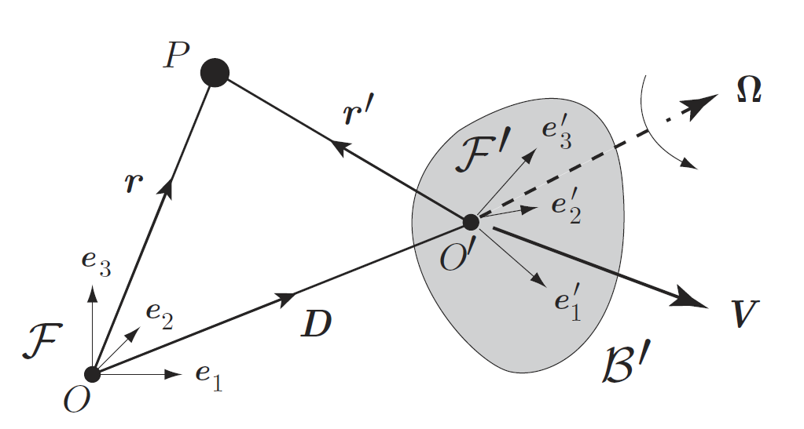
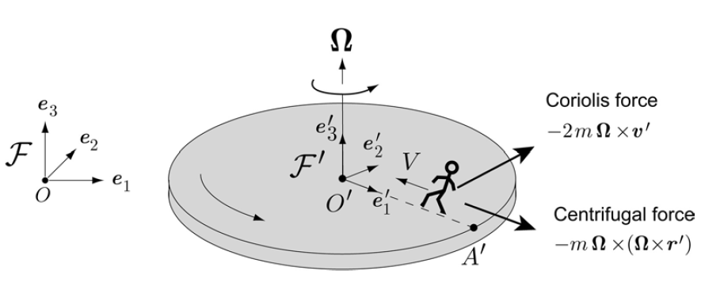

3.15. Rotational reference frames¶
This section of the notes is based on Chapter 17 of [], which is available in digitised form from UCL library. The material is concerned with relativistic transformation of Newton’s second law of motion from an inertial frame of reference to a rotating frame of reference, such as the frame of the rotating Earth. It introduces the important idea of the Coriolis force, which influences large scale fluid motions on the Earth surface, such as ocean currents. The Coriolis force can be neglected in all of the scenarios that we will consider in this course.
Hurricanes
A neat video explanation of how the Coriolis force determines the direction of hurricanes in the North and South hemisphere can be found at National Geographic
Note: it is popularly thought that the same effect causes bathtub vortices to drain in different directions in the North and South hemispheres, but on this small scale the Coriolis forces involved are insignificant compared with other sources of fluid disturbance. To demonstrate the Coriolis effect in a bathtub would require a very large tub containing very still water that is then drained through a very small hole under very controlled conditions. The experiment has been done!
For the same reason, the direction of rotation of a tornado is not due to the Coriolis effect. Tornadoes are relatively small in size compared to hurricanes. Tornadoes typically due to a strong shear wind gradient, which creates a line of vortices rotating about an axis parallel to the ground. The vortex line is then tilted upwards and stretched by warm updrafts.
3.15.1. It’s all a matter of perspective¶
In the image below, \(\mathcal{F}\) and \(\mathcal{F}^{\prime}\) are two different frames of reference, which are in relative motion. Each frame is defined by its own origin and vector basis, \(\mathcal{F}:\{O;\underline{e}_1,\underline{e}_2,\underline{e}_3\}\) and \(\mathcal{F}^{\prime}:\{O^{\prime};{\underline{e}_1}^{\prime},{\underline{e}_2}^{\prime},{\underline{e}_3}^{\prime}\}\). We take \(\mathcal{F}\) to be a fixed (“true”) frame, and suppose that frame \(\mathcal{F}^{\prime}\) is embedded in a rigid body \(\mathcal{B}^{\prime}\), which is moving with translational velocity \(\underline{V}\) and angular velocity \(\underline{\Omega}\) relative to \(\mathcal{F}\), as shown.

{kind=link}
We now consider the motion of an arbitrary point \(P\) as measured by an observer within each frame. We will take \(\underline{r}\) to be the position of the point relative to frame \(\mathcal{F}\) and \(\underline{r}^{\prime}\) to be the position relative to frame \(\mathcal{F}^{\prime}\). According to the triangle law for vectors, we may then write
in which \(\underline{D}\) is the position vector of \(O^{\prime}\) relative to frame \(\mathcal{F}\). Differentiating this expression gives the rate of change of position of point \(P\). We will examine the change from the perspective of frame \(\mathcal{F}\), as indicated by the subscript in the expression below:
The term on the left is the velocity of \(P\) seen by an observer in frame \(\mathcal{F}\). The first term on the right is the translational velocity of body \(\mathcal{B}^{\prime}\). The second term on the right is a little more complicated, because vector \(\underline{r}^{\prime}\) was defined relative to frame \(\mathcal{F}^{\prime}\) but the time derivative is taken with respect to frame \(\mathcal{F}\). We must account for the fact that the basis vectors in \(\mathcal{F}^{\prime}\) are changing relative to frame \(\mathcal{F}\), due to the angular rotation of body \(\mathcal{B}^{\prime}\). Seen from the perspective of frame \(\mathcal{F}\), the basis vectors satisfy
and hence for a general vector \(\underline{h}={h_1}^{\prime}{\underline{e}_1}^{\prime}+{h_2}^{\prime}{\underline{e}_2}^{\prime}+{h_3}^{\prime}{\underline{e}_3}^{\prime}\) we have the following result :
Putting this together with result (3.151) we obtain
where \(\underline{v}\) is the velocity measured in frame \(\mathcal{F}\) and \(\underline{v}^{\prime}\) is the velocity measured in frame \(\mathcal{F}^{\prime}\). Differentiating this expression again gives a result for the acceleration:
which simplifies to
in which \(\underline{a}\), \(\underline{a}^{\prime}\) are the accelerations observed in each frame and \(\underline{A}\) is the translational acceleration of \(\mathcal{F}^{\prime}\).
3.15.2. Transformation of Newton’s law¶
Recall that Newton’s second law \(\underline{F}=m\underline{a}\) was defined for an inertial frame of reference. If the displacement, velocity and acceleration are measured from the perspective of our rotational frame of reference, the law becomes
The result can be rearranged in the manner
which resembles the standard Newton’s second law with the addition of extra terms; which are described as “fictitious forces”. The term \((-2m\underline{\Omega}\times\underline{v}^{\prime})\) is known as the Coriolis force, and the term \((-m\underline{\Omega}\times(\underline{\Omega}\times\underline{r}^{\prime}))\) is known as the Centripetal force.
Note: the semantic distinction of what is “actual” and what is “fictitious” is made purely so that Newton’s law holds in its inertial form.
Example
Consider a person walking at constant speed towards the centre of a roundabout that is rotating at constant angular velocity \(\Omega\), as illustrated below:

{kind=link}
The origin of reference frame \(\mathcal{F}^{\prime}\) is stationary with respect to the inertial frame \(\mathcal{F}\), so \(\underline{A}=0\) in the transformed Newton’s law. The roundabout is rotating at constant angular velocity, so \(\dot{\underline{\Omega}}=0\). The person is not accelerating from the perspective of frame \(\mathcal{F}^{\prime}\), so \(\underline{a}^{\prime}=0\).
We have \(\underline{\Omega}=\Omega{\underline{e}_3}^{\prime}\) and \(\underline{v}^{\prime}=-V{\underline{e}_1}^{\prime}\). For the displacement we may write \(\underline{r}^{\prime}=(R-Vt){\underline{e}_1}^{\prime}\) where \(R\) is the radius of the roundabout and \(t\) is the time since the person started their motion.
Let \(\underline{X}\) be the force exerted by the roundabout on the person. The total force on the person is therefore given by \(\underline{X}-mg{\underline{e}_3}^{\prime}\) and the transformed Newton’s law gives
The reaction forces to the left and to the centre oppose the Coriolis and centripetal forces, respectively. Since the person is not a point, they must also lean forward and to the left to counter these two forces.